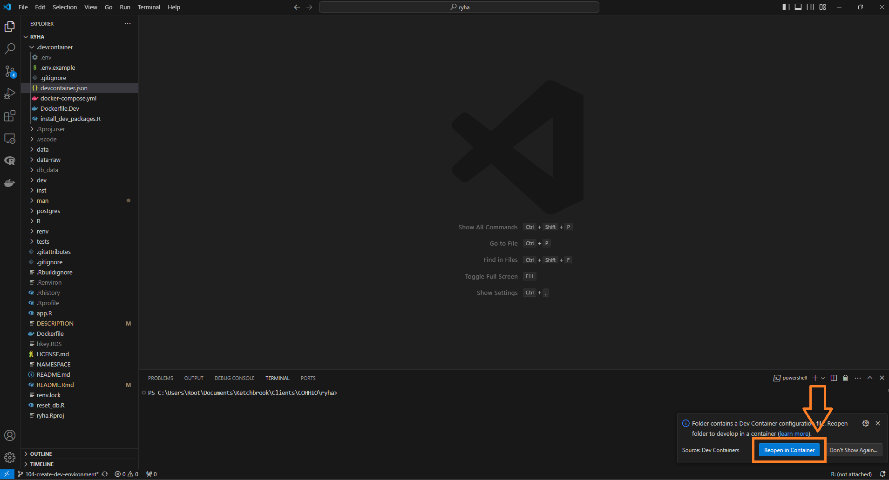
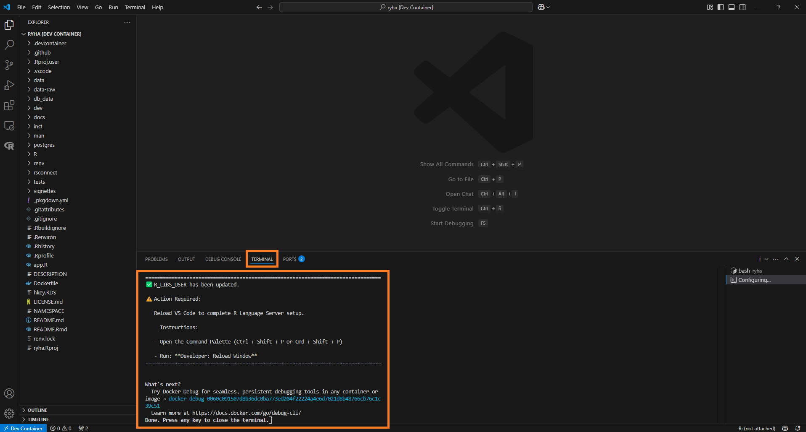
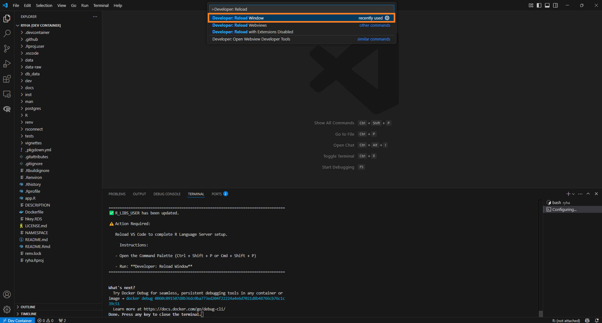
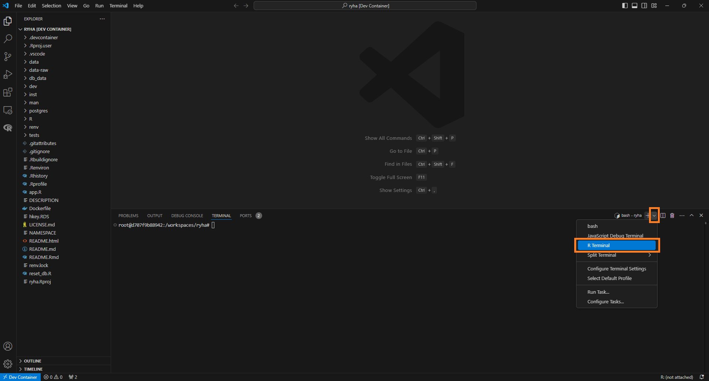
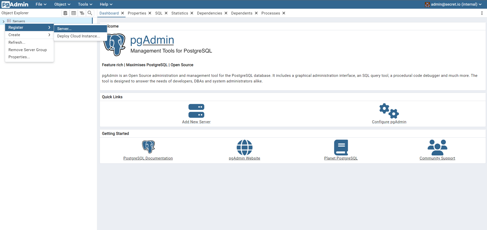
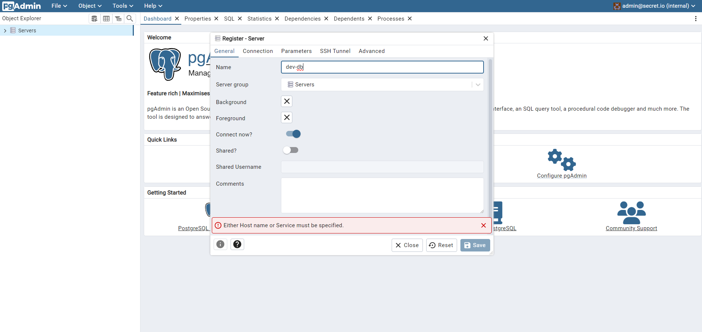
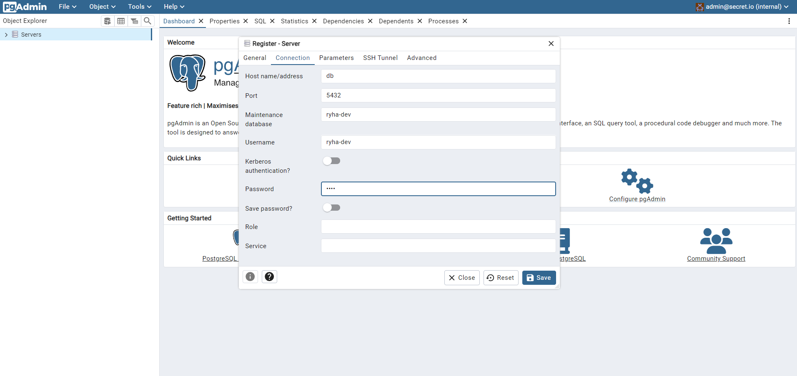
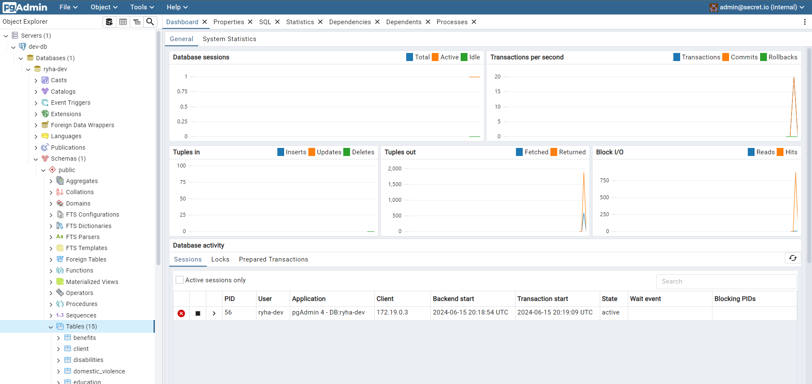

Development Environment
dev-environment.RmdOverview
.devcontainer directory contains the necessary files to set up a development container:
-
.env.example
is an example file that shows how to set the
RENV_PATHS_CACHE_HOSTenvironment variable (required to configure renv’s cache) based upon Windows OS. You need to create a file named.envin the same directory as.env.exampleand setRENV_PATHS_CACHE_HOSTvalue to a path in your local machine based upon {renv}’s Cache location. -
complete_dev_setup.R
is a script run as a
postCreateCommandindevcontainer.jsonto leverage renv’s cache. It performs the following tasks:- runs
renv::restore()to restore the project’s dependencies from the renv.lock file - installs development-only packages (i.e. packages not needed to run
the application but useful during development, such as
devtools). You can add or remove development-only packages from this script based on your preferences. It’s recommended to specify exact package versions to prevent unintended updates to other packages. - configures R Language
Server by updating the
R_LIBS_USERenvironment variable, ensuring it points to the correct library path
- runs
- devcontainer.json describes how VS Code should start the container and what to do after it connects.
-
docker-compose.yml
sets up a development environment with three services:
-
app: a custom-built application container that mounts local directories and runs indefinitely. -
db: a PostgreSQL database container with persistent storage and exposed ports for access. Check db section for instructions on how to connect to, populate and launch the application connected to the database. -
pgadmin: a pgAdmin container for database management. Check pgadmin section for instructions on how to configure the server.
-
- Dockerfile.Dev contains a set of instructions on how to build the Docker image to run the application in development. Any new system requirement needed for additional R packages installed must be added to this file.
Requirements
- Docker. We recommend installing it via Docker Desktop.
- VS Code
- VS Code’s Dev Container Extension
QuickStart
Once you have installed the necessary requirements, cloned the
repository locally and created the .devcontainer/.env file,
open the repository in VSCode and click Reopen in
Container…:

NOTE: Alternatively, you can select Dev Containers:
Reopen in Container from the Command Palette (F1)
to perform this action.
The Dev Container initialization may take a few minutes, as it needs
to create different Docker images and install the corresponding R
packages via renv::restore().
The following messages in TERMINAL tab indicate that the
process completed successfully:

Follow the instructions to configure R Language Server:

NOTE: Developer: Reload Window only needs to be run after a Rebuild. There is no need to run it after you Reopen a container.
NOTE: If you encounter any errors, you can review the logs to troubleshoot or contact a team member for assistance.
To launch an R Terminal, select R: Create R terminal
from the Command Palette (F1). Alternatively, you can click
the ⌄ icon in VS Code Panel and select R
Terminal:

Remember to select the R Terminal in the right sidebar to open it.
Clean Environment
Exit Dev Container
To exit the Dev Container, click Dev Container (bottom left corner) and select one of the following commands:
- Reopen Folder Locally: This option will close the current Dev Container session and reopen the project folder in your local environment, outside of the containerized setup. It’s useful when you want to switch back to your local development environment while keeping the same project open.
- Close Remote Connection: This will close the connection to the Dev Container and stop the container. The current workspace will be closed, and you’ll be returned to the main VS Code window without any active workspace or connection.

Remove Dev Container
NOTE: If you work on the project on a regular basis, it’s not necessary to remove the Dev Container after you exit it.
To remove the Dev Container:
- Exit the Dev Container
- Remove the container
- Remove associated images
- Remove associated volumes
Warning: Removing the volumes will delete the development database and any data you’ve uploaded, requiring you to repopulate the database after rebuilding. If you choose to delete only the container and its associated images (i.e. you don’t delete the volumes), the development database will be available when you rebuild the Dev Container.
The following steps demonstrate how to remove the container, images and volumes using Docker Desktop. You can also use Docker’s command-line interface to perform the same tasks.
Remove Container
- Go to Containers tab
- Locate the container associated with your Dev Container and click the corresponding trash icon to stop and delete it

Container Details
The container uses Docker Compose to initialize the following services:
app
app creates a container based on .devcontainer/Dockerfile.Dev. This file:
- installs the R version used in this project
- installs R packages’ system requirements
- installs the renv version used in this project
In addition, app service defines a Volume to leverage
the use of renv cache. The
RENV_PATHS_CACHE_HOST environmental variable needs to be
set in .devcontainer/.env. Resources:
- {renv}’s Cache location. This article helps to find where renv’s cache is located in your machine.
- This GitHub Issue comment shows examples on how to state the path when working with a Windows machine.
By setting the network_mode property to
service:db, we can use host = "localhost" when
connecting to the development database from inside the Dev Container.
This configuration ensures that the connection string remains the same
regardless of whether we are connecting from inside or outside the Dev
Container (when the ports property is set for
db service). Without network_mode setting, we
would need to use host = "db", resulting in different
connection strings depending on the context, which is something we want
to avoid.
To run the app in development mode (without installing the {ryha} R
package), run golem::run_dev().
db
db creates a postgreSQL database. You can find the
credentials under db’s environment property in
.devcontainer/docker-compose.yml.
The ports property allows the database to be accessible
in the host machine (i.e., outside of the Dev Container). With this
property set, the connection string will use
host = "localhost" for external access.
This configuration ensures that the connection string remains the
same regardless of whether we are connecting from outside or inside the
Dev Container (when the network_mode property is set for
app service).
Populate
Once the container is created, you can run postgres/populate_dev_database/populate_dev_database.R to create and populate the corresponding tables. To run this script you need to:
- Store
dm.rdsin the directorypostgres/populate_dev_database/data.dm.rdsis a snapshot of the database in production. It needs to be created by someone with access to the production database. The process to generate this object is to read each table in the database into a list of dataframes where each element is named after the table name the data was read from. - Run
devtools::load_all(".")to have access to the different functions inryhathat are used in the script (e.g.send_to_db()).
pgAdmin
pgAdmin provides a graphical administration tool to
make it easier to manipulate schema and data in PostgreSQL. Once the
container is created, you can access pgAdmin in http://localhost:5050/
with the following credentials (which are defined under
pgadmin’s environment property in
.devcontainer/docker-compose.yml):
- User:
admin@secret.io - Password:
admin
NOTE: pgAdmin may not function correctly in all web browsers. We recommend using Google Chrome.
Once logged in, follow these steps to Register the Server:
- Go to
Object > Register > Server.... Alternatively, you can right-clickServersas shown below:

- In
General, provide aNamefor the server. For example:dev-db.

- In
Connection, set the following configuration:
- Host name/address:
db. This value needs to match the service name. - Port:
5432 - Maintenance database:
ryha-dev - Username:
ryha-dev - Password:
ryha
Maintenance database, Username and Password were defined under
db’s environment property in
.devcontainer/docker-compose.yml.

- Click
Save. If the development database was already populated, you should be able to see the tables with data:
